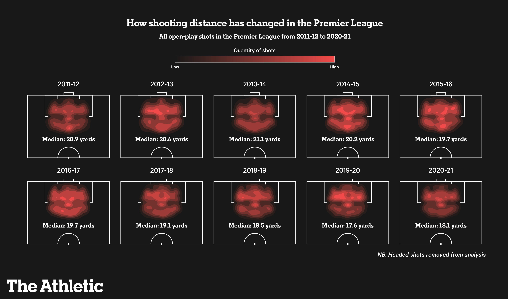
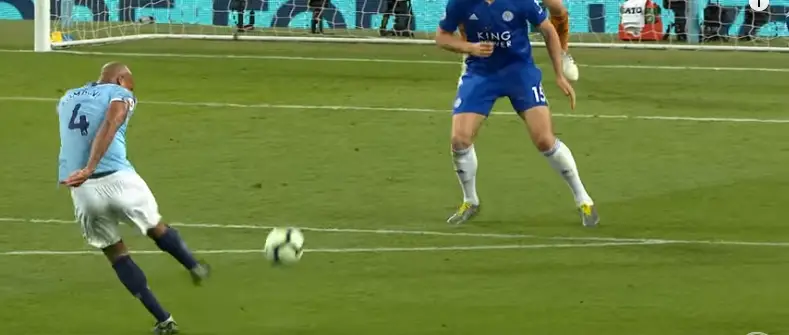

From Screamers to Tap-Ins: The Truth Behind the Evolution of Shot Positioning in Football
By Lucas Camargo | April, 16, 2023

Every football (soccer) fan has, at some point, dreamed of scoring a Gerrard-esque worldie as a child. A strike from distance that would make time stop, with such fierce power, bending into the top corner to the elation of the crowd. With time, however, many passionate fans have seen the game they love so dearly endure an ever growing deficiency of those same magnificent screamers, which begs the question: how did we go from seeing such exquisite long-range strikes like those in the infamous selection of goals of the week for December in the 2006/07 Premier League season, to being mind-blown by record tap-in scoring rates?
This change is emblematic of the transformation the game has seen over the last decade. With the uprising of statistics in football and the creation of ever-evolving expected goals (xG) models, we have seen a steady transition towards shots as close to the penalty box as possible in what are considered 'higher quality' chances. But is this change really positive? Are teams really benefiting from focusing their tactics to shoot from closer? According to Maaike Van Roy's recent study Leaving Goals on the Pitch: Evaluating Decision Making in Soccer, not necessarily…
But what are these so-called 'higher quality' chances and what are they based on? This concept has been derived from the xG model, which is a statistical metric used to measure the quality of a scoring opportunity in football. It considers factors such as shot distance, angle, and the number of defenders in the way, among a multitude of other things, to estimate the likelihood of a shot being scored. This metric has become increasingly popular among soccer analysts and coaches, who use it to evaluate player and team performance and make tactical decisions.

(https://www.datofutbol.cl/xg-model/)
As indicated by the representation above, what this model generally shows is that shots from closer to the goal tend to have a higher chance of being scored than shots from farther away and from smaller angles to the goal. Before we analyze how beneficial this change has been, it is important to first understand how this change has occurred. How has the influence of this model been translated into the real game? Has there truly been a change in quantity and quality of shots in the modern game? Well, according to the data, there just might be.

The first thing we see is a gradual decrease in the volume of shots across Europe's top 5 leagues over the last decade. As teams seek to find higher xG shot positions, they tend to shoot less overall as these are harder to come by in a game. In fact, we see a drop of between 1.5 to 2 shots per game only over the last 6 seasons, with an even more accentuated change to be expected when comparing further into the past. This means we have seen games with fewer and fewer shots by the year. Interestingly, however, we see a slight upwards trend in conversion rate, meaning although fewer shots are being taken, a similar proportion of those are still being scored. And this lack of an equivalent plummet in goals could very well be an indication of higher scoring probability shots being taken.

This is also backed up by the fact that, despite the number of total shots per game going down, the number of goals per game has remained mostly constant over the past decade, which might indicate an increase in the quality of shots being taken. In order to visualize this change better in an in-game context, let's take a look at the shot positions across the last 10 Premier League seasons:
(https://theathletic.com/3145563/2022/02/24/how-shot-locations-have-changed-in-the-premier-league/)
As expected, the data once again shows a trend towards a reduction in shot distance over time. What initially sticks out is a general trend towards shots from inside the box evidenced by the heatmap of shots on the pitch. When comparing shot distances, we see a disparity as big as 3.5 yards from 2013-14, the season with the highest median distance, to 2019-20's 17.6 yards. It is also interesting to note that, in 2011-12, teams in the conventional 'big 6' dominated the charts with the lowest average shot distances, while the data shows a much more balanced spread in, for example, 2020-21. This shows that the change is not only coming from the big clubs playing intricate football, but across the game as a whole.
So now that we have understood how the game has changed we can begin to question the efficacy of this transition. Aesthetic appeal aside, what are the implications in output and efficiency for teams, and are they really better off ceasing long-range opportunities for a chance at finding inches of space for a shot in a crowded box?
Maaike Van Roy's aforementioned study finds that teams are often too 'box-centric' in their attacking approach, to a point where it is actually detrimental to their goal scoring numbers. By analyzing the potential outcome of different decisions in different locations on the pitch, the study finds every team would benefit from taking more shots from outside of the box from specific positions tailored to that specific team. And this should come to no surprise as often teams seem to overcompensate, passing up clear shooting opportunities from outside the box with the hope of finding a closer chance later on in that same possession.
What Van Roy's study proves is that it is important that we see a blend of both close-distance and shots from outside the box. Teams shouldn't hyperfocus on one style otherwise they become predictable. And even with the highest level of quality, sometimes 90 minutes is not enough to find the space and time necessary around the penalty area to score against a well-positioned defense.
The perfect example of this conundrum dates back to the 2018/19 season, when a possession-heavy Pep Guardiola Manchester City saw themselves needing a goal in the dying minutes of a home game against Leicester to go top of the league heading into the final match week. After over 75 minutes meticulously looking for space inside the box, no one could break the deadlock due to Leicester's well-structured low and compact block. The only other option was taking advantage of the space left outside the box, something unusual amongst Guardiola's tactics. And, in a desperate attempt, Vincent Kompany, a center-back definitely not known for his shooting ability, guided a missile into Schmeichel's top corner to essentially secure the league title for the Sky Blues.
The same should be said, of course, for only focusing on long-shots, as the evolution of the game and rise of xG show they are statistically less likely to result in a goal, and so it is definitely not efficient to only look for shots from outside the box. Striking this balance is key, and is what all teams should seek to achieve.
Although it is hard to argue that the rise of data analytics in football has been the only reason for this change, it is inconceivable to say that it was not the main drive responsible for this shift. In an unquenchable quest for efficiency, it is only logical that teams will continue to look to use statistics to their advantage, and we can only speculate about how more advanced models may impact the game in the future. But one thing is for certain: regardless of whether you prefer a game filled with long range attempts or one consisting of methodical search for space, these changes to the game are here to stay.